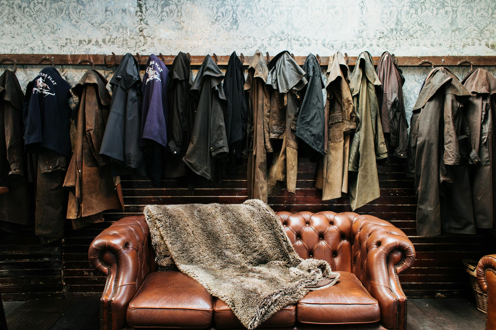
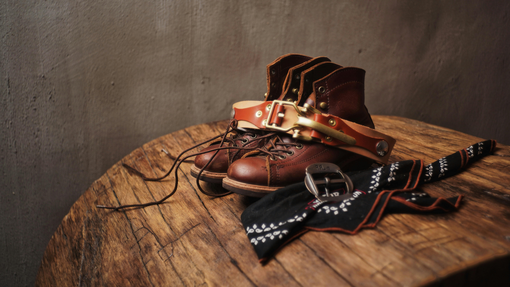

Leather Reconstruction
Leather
Reconstruction.
Reverse drying, cracking, and rot through advanced biological fatliquoring. We reconstruct panels using exact vintage donor hides.
Book Evaluation
Fur Archiving
Ethical
Fur Archiving.
Pelt rehydration and structural lining replacement. We stabilize fragile historic furs to prevent shedding while reviving the original sheen.
Book Evaluation
Hardware Integration
Vintage
Hardware.
We replace blown zippers and oxidized rivets using era-specific new-old-stock brass and steel components, retaining weight and pull authenticity.
Book Evaluation
Vault Storage
Climate
Vault Cover.
Store your pieces in our absolute humidity-regulated facility during off-seasons to halt bacterial decomposition.
Book Evaluation